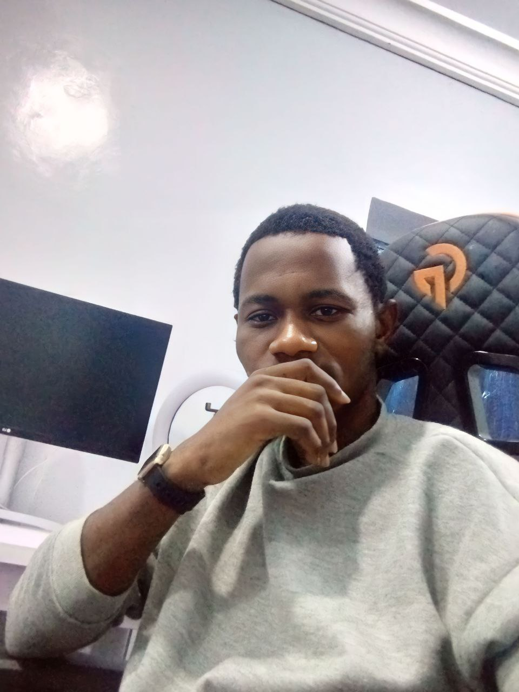

BABATUNDE OLUWASEGUN AYORINDE

Lagos State.
Professional Summary:
Result Driven and Proactive. Employs excellent teamwork skills and multitasking strength. Highly equipped with
skills such as Prowess use of Microsoft Office Suite, Coding, Digital Marketing, Dexterous use of window PC,
Graphic Design, Effective Communication and Decision Making. Demonstrated ability to achieve the desired
goal.
Education:
- Higher National Diploma (HND) in Computer Science | Upper Credit
Ogun State Institute of Technology, Igbesa 2020
- National Diploma (ND) in Computer Science | Upper Credit
Kwara State Polytechnic, Ilorin 2018
Experience:
Skill & Abilities:
- Html, Css
- Javascript
- Python
- Communication and Interpersonal skills
- Teamwork and Decision Making
- Microsoft Office Suit/ Google Workspace
- Time Management
Certifications:
- Certificate in Introduction to Front-End Development, Coursera
- Certificate in Learn to code for the web course, University of Leeds & Institute of Coding
- Certificate in Computer programming for everyone course, University of Leeds & Insitute of Coding
- Certificate in Great User Experience for Mobile Apps course, University of Leeds & Institute of Coding
- Certificate in Learn to code for the web course, University of Leeds & Institute of Coding
- Certificate in The Fundamentals of Digital Marketing course, Google|2020
- Certificate in Python for Data science, Coursera
Hobbies
Contact